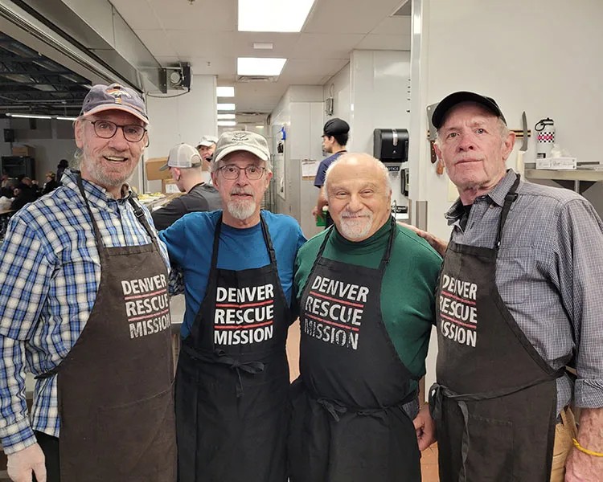
Volunteer
Serve a meal to our guests, mentor a program participant or become a Gospel provider volunteer.
Volunteer With UsWhen You Partner With The Mission, You Help Change Lives In The Name Of Christ
As a faith partner in our city, you know the value of sharing the love of Christ in our local community. We value your role in helping our most vulnerable neighbors. When you partner with the Mission, you help change lives in our community.
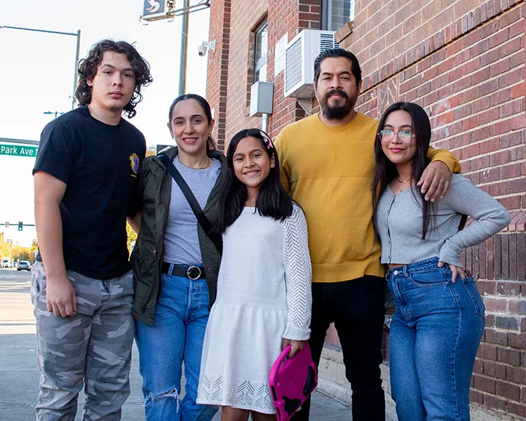
Monthly church group volunteers serve dinner at our shelter.
Text PRAY to 720.719.0778 and receive updates about how to pray for our guests, staff and community.

Serve a meal to our guests, mentor a program participant or become a Gospel provider volunteer.
Volunteer With Us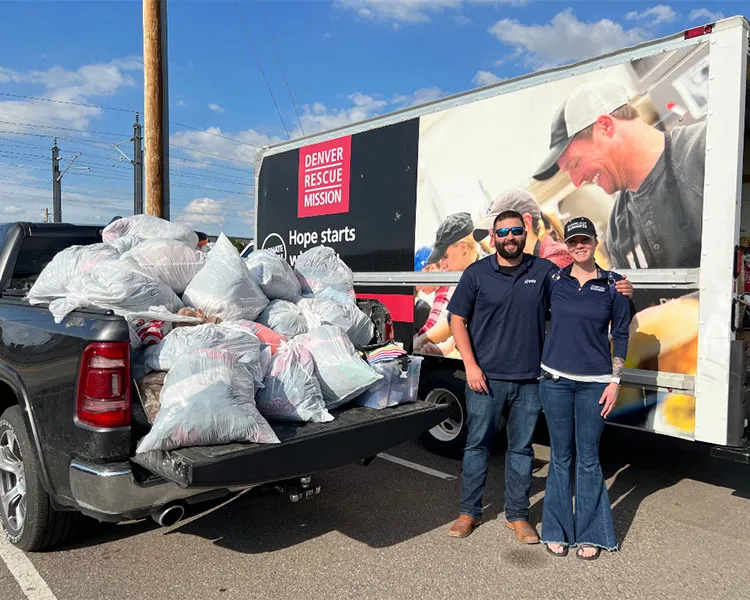
Host a donation drive at your church, consider a special offering donation or sign up to give regularly to the Mission.
Donate Now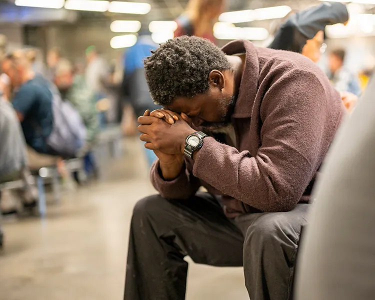
Partner with us in prayer by signing up to receive monthly prayer and praise updates by email.
Pray With Us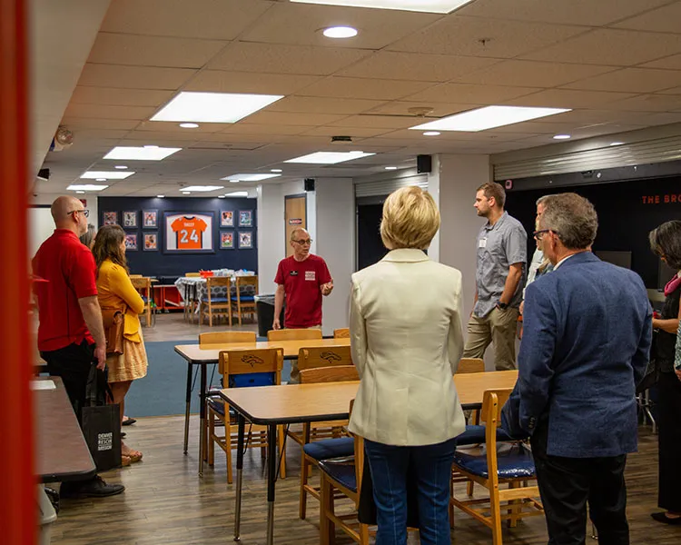
Come visit one of our facilities and gain in-depth knowledge on how we serve our guests.
Contact Us to Schedule a Tour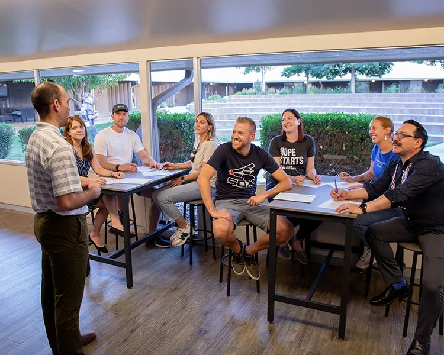
Engage your church staff or congregation with trainings to help understand homelessness in Denver.
Learn More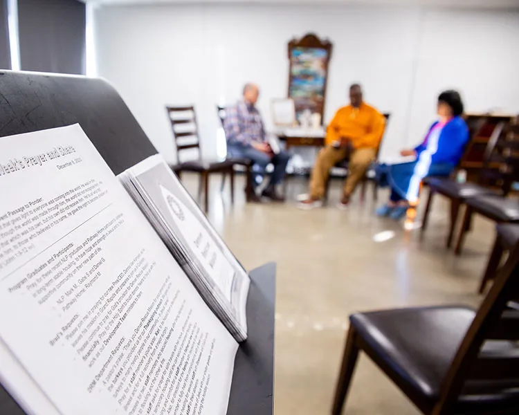
Learn about resources and support you can offer to your congregation if they need help.
Contact Us to Learn MoreOur interactive training for churches, Faith in Action: A Church’s Guide to Understanding Homelessness, is a comprehensive session designed to equip your congregation with the knowledge and tools needed to effectively address homelessness in your community. In just 75 minutes, we’ll explore key topics and engage in interactive discussions that will empower your church to make a meaningful impact in our community through Denver Rescue Mission.
The training can be modified to accommodate different timelines and group sizes depending on your church’s needs.
Contact Us for More InformationJoin us in this transformative training experience as we work together to build a compassionate, informed, and action-oriented church community.
“Participating in this training has opened our eyes to the tangible ways we can make a difference in the lives of those experiencing homelessness. It’s not just about providing shelter; it’s about building bridges and restoring hope.”
Pastor John Smith, City Grace Community Church
Your church community can be a beacon of hope. Start a fundraiser for Denver Rescue Mission and show your compassion for those experiencing homelessness. Set up your fundraiser today and add your goal and customize your fundraiser page in just a few clicks. Let’s make a lasting impact together.
Start a Fundraiser NowHave questions? Want to learn more about how your church can go deeper in helping share the love of Jesus with people experiencing homelessness in Denver? Contact us today to get connected with our Church Engagement Manager.
Contact Us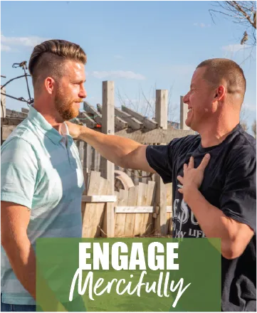
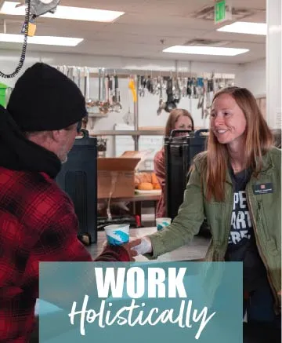
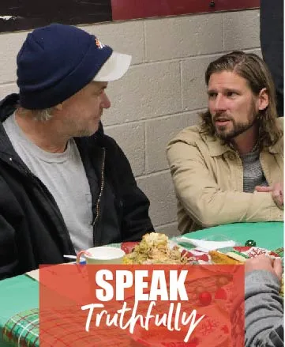
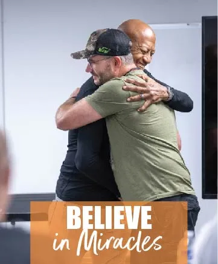
In an ever-changing world, Christ has always been at the center of our work. Our Christ-Centered Approach focuses on four key areas:
Loving our neighbor as ourselves, without judgement.
Recognizing that we are complex beings who require complex solutions (biological, psychological, social, and spiritual).
Speaking hard truths: first to ourselves and then into the lives of the people we serve and systems we engage within.
Believing that all lasting growth and healing depends upon the miraculous work of God.
Have a question about church engagement for our team? Contact us today to learn more about how your church can partner with us to help change lives in the name of Christ.
This form is for general questions only. Please do not send any sensitive information through this contact form.